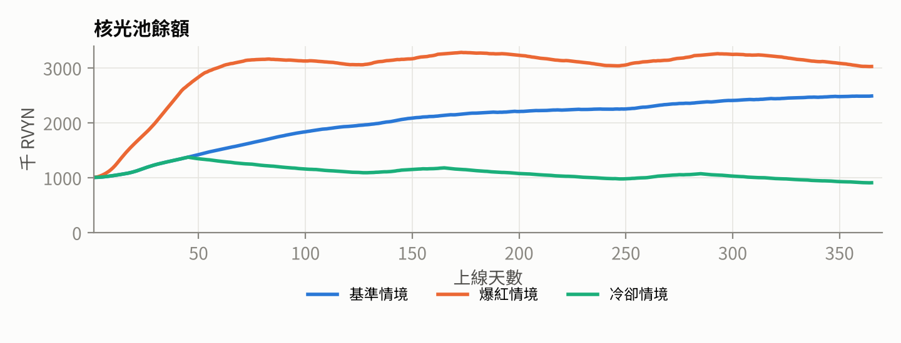
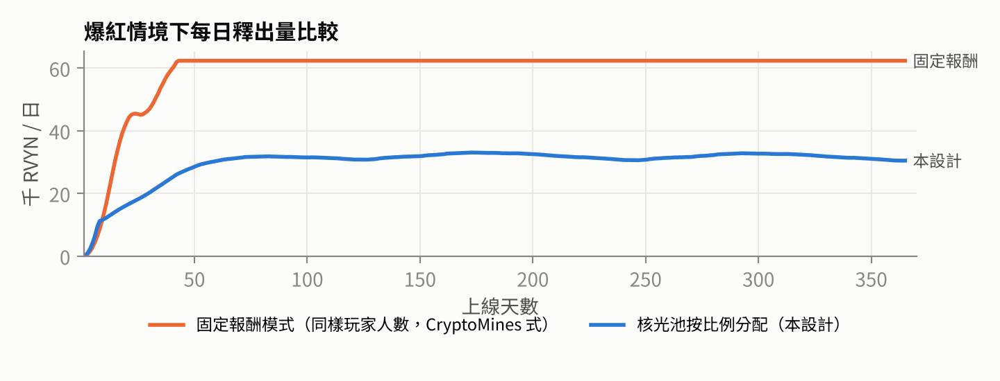
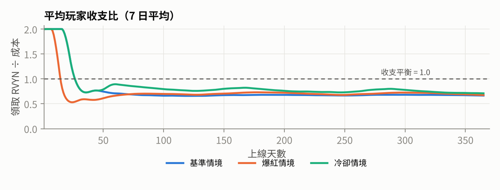
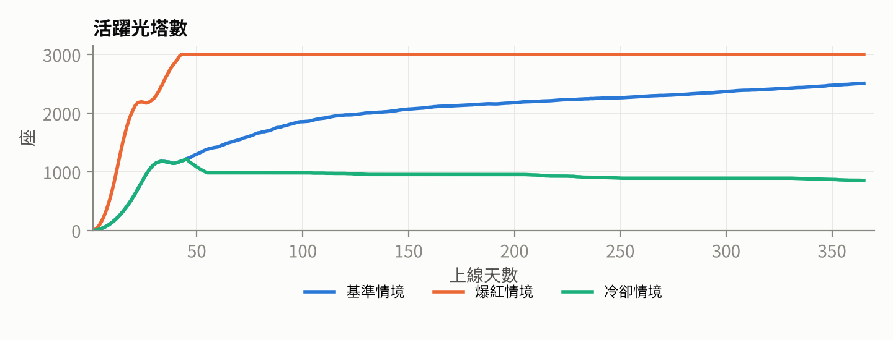

遊戲概念、NFT 與鑄造規則、RVYN 代幣經濟、經濟模擬、智能合約架構與開發路線圖。
這份白皮書同時是給團隊的工程設計圖：合約、後端和畫面都照這裡的規則和參數實作。v1.0 的參數已經由老闆確認（決策紀錄見第 14 章）。之後要改數值或規則，先改這份文件，再改程式。
內部 演算法、模擬和內部試算。宣傳文案不主動引用，但抽卡機率和潛光結果機率依老闆決定公開（第 12 章），這點取代 v3「機率屬內部資料」的規則。
待辦 不需要老闆決策、但上線前要完成的事項（例如文案、查證），彙整在第 14 章。
v3 文件提到的「合約組內部總表」不在提供的資料裡。本文件 v1.0 的數值經老闆確認後，取代總表中任何不一致的數值。
Lightdive／潛光遠征是 RovynCore 在 Robinhood Chain 上的第一款遊戲。玩家用三種 NFT 組成一座「光塔」，每天派探索者「潛光」前往光源座標，把光帶回來，換成 RVYN。
| 問題 | CryptoMines 的做法 | Lightdive 的做法 |
|---|---|---|
| 獎勵怎麼算 | 每支艦隊固定拿「約 X 美元」的代幣 | 核光池每天只釋出固定比例，由所有玩家按光塵比例分；人越多，每人分越少，總量不變 |
| 代幣從哪來 | 系統持續增發 | RVYN 不能增發；獎勵來自預先注入的核光池，加上玩家消費的回流 |
| 代幣去哪裡 | 幾乎只有抽卡 | NFT 次數用完會歸航（燒毀），要重新鑄造；鑄造費有 15% 直接銷毀、70% 回到核光池 |
| NFT 數量 | 無上限 | 光塔、稜鏡有流通硬上限；稀有度用「牌組」抽，數量精確固定 |
| 可玩性 | 每天按一下 | 席位與光度搭配、稜鏡的風險檔位、六種屬性與同頻圖鑑、每日異相、賽季 |
| 透明度 | 不透明 | 鑄造剩餘數量、每日釋出、銷毀量全部上鏈，網站即時公開 |
模擬顯示：第一年所有玩家加總拿回的 RVYN 約是投入的 57%–72%。其餘的部分進了銷毀、營運金庫，或暫時留在核光池裡供之後釋出，這是任何不印鈔的遊戲經濟都會有的結果。賺錢的來源是：早期進場、抽到高稀有度、針芒光束的好運，以及在市場上賣出稀有 NFT。這正是「重度 P2E」的刺激感，但它不是穩賺的投資，對外也不能這樣宣傳。
CryptoMines 在 2021 年底的 BSC 上爆紅：玩家用 ETERNAL 代幣抽「船員」和「飛船」NFT，組成艦隊派去星球挖礦，再領回 ETERNAL。它的結構簡單、美術收集感強，入門很快；但上線幾個月後，代幣崩盤，玩家大量流失。
以下對 CryptoMines 機制的描述來自公開資訊和社群記憶，細節可能有出入；我們只參考概念，不使用它的名稱、美術或素材。
| # | 失敗原因 | Lightdive 的修正 | 章節 |
|---|---|---|---|
| 1 | 獎勵綁美元計價：幣價下跌時，系統要印更多代幣才能付出同樣價值，形成死亡螺旋 | 獎勵以 RVYN 計，數量由核光池餘額決定，和幣價無關。幣價下跌時，系統不會多發一枚 RVYN。 | 7.2 |
| 2 | 總發行量隨人數增加：每支新艦隊都有固定收益 | 每天釋出 = 核光池 × 1.0%，與人數無關。人多時每人分得少，自然抑制過熱。 | 7.2 |
| 3 | 唯一消耗是抽卡，新人停止進場就崩 | NFT 有航程次數，用完歸航（燒毀）；鑄造費 15% 銷毀、70% 回流核光池；提領有遞減手續費，也回流核光池。 | 7.4 |
| 4 | 玩家都在算回本天數，回本即賣 | 不公告保證報酬；收益隨參與人數浮動；高稀有度和收藏、圖鑑、賽季給玩家留下來的理由。 | 4、11 |
| 5 | 沒有遊戲性 | 席位與光度搭配、稜鏡光束的風險選擇（透過交易取得）、屬性與同頻、每日異相、賽季排行與圖鑑。 | 4 |
| 6 | NFT 無限量，持續稀釋 | 光塔與稜鏡有流通硬上限；稀有度用牌組抽，每副牌組總數精確。 | 6 |
| 7 | 機器人與多帳號 | 獎勵按光度比例分，開小號不會多拿（NFT 本身要花錢）；需要防的只剩空投和活動獎勵。 | 12 |
CryptoMines 的收益全部來自新玩家的錢，而且承諾了固定報酬。Lightdive 把獎勵改成一個有上限、會自我回補的池子按比例分配，讓經濟在人多和人少時都能撐住。
本章摘要《NFT 世界觀與故事 v3》，完整設定和美術指引以原文件為準。
在星系中心，ROVYN CORE 發出了第一道光：核光 RVYN。這道光碎成千萬片，化成光源和光塵，沉進星系深處。觀測者在核心周圍建起光源觀測站，立起一座座光塔，用共鳴稜鏡把晶核的光折成光橋，讓探索者順著光橋潛進深空，把光帶回來。這就是潛光。
「潛進深空，把第一道光帶回來。」 Dive deep. Bring the First Light home.
| Lightdive | 是什麼 | 對應 CryptoMines |
|---|---|---|
| 光塔 Beacon Spire | 大型 NFT，玩家的隊伍與基地。Lv.1–5 決定探索者席位 1–5 個 | 飛船（決定載幾個船員） |
| 共鳴稜鏡 Resonance Prism | 中型 NFT，每座光塔 1 面。光束決定風險風格 | （新增，CryptoMines 沒有） |
| 探索者 Seeker | 小型 NFT，7 層圖層肖像，屬性看光紋（B 層） | 船員 |
| 光源座標 Light Coordinate | 潛光的目的地，有深度與屬性 | 星球 |
| 光塵 Lightdust | 每次潛光帶回的點數，每天換成 RVYN | 挖礦產出 |
| 歸航 Homecoming | 航程次數用完，NFT 退場（鏈上燒毀） | 船員或飛船到期 |
文案規則沿用 v3：不使用「挖礦／礦工／打工」等字眼；公開文案不寫期望值、倍率、機率；探索者用完叫「歸航」，不是死亡。
現有的 Signal-Keeper 概念圖（白色裂紋面具、胸口萊姆綠核心、環繞軌道球、手持 SIGNAL 終端）和 v3 世界觀高度相容，配色也和品牌主色 #C9FF55 一致。建議定位為：
MASK 面具：過濾核光的觀測面罩（和 v3 探索者頭盔同一系譜）
CORE 核心：胸口嵌著一片晶核，所以聽得見深空的光
ORBIT 軌道：三顆軌道球是他的「信標」，用來穩住光橋
SIGNAL 訊號：終端上顯示每天的光源座標與異相
定案：Signal-Keeper 是遊戲 NPC，不做成可交易 NFT，避免和探索者的稀有度系統混淆。之後可以考慮做成賽季限定外觀或圖鑑稱號。
| 時間 | 發生什麼 |
|---|---|
| 每日 00:00 UTC | 新的一天（紀元 Epoch）開始。Signal-Keeper 公布當日的光源座標與異相（哪些座標的屬性改變）。前一天的 RVYN 分配結算完成，可以領取。 |
| 當天任何時間 | 每座光塔可以出發潛光一次：選一個光源座標（必須達到該深度的總光度門檻），送出交易。 |
| 出發後約 1 小時內 | 系統公開該小時的隨機種子，潛光結果揭曉：成功、明亮收穫、罕見光焰，或光橋中斷。帶回的光塵立即顯示。 |
| 當天結束 | 當天所有光塵加總，核光池當日釋出量按比例換成 RVYN，記入玩家帳上。 |
座標分成六個深度。越深的座標需要越高的總光度才能前往，帶回的光塵有小幅加成。這是給玩家的成長目標，加成幅度刻意保持小，避免大戶的優勢過度放大。內部
| 深度 | 總光度門檻 | 深度係數 | 大約需要的隊伍 |
|---|---|---|---|
| I 淺層 | 0 | 1.00 | 任何隊伍 |
| II | 120 | 1.03 | Lv.2 光塔坐滿 |
| III | 220 | 1.06 | Lv.3 光塔、中等稀有度 |
| IV | 380 | 1.10 | Lv.4 光塔坐滿 |
| V | 600 | 1.15 | Lv.5 或高稀有度組合 |
| VI 深淵 | 850 | 1.20 | 曜核級隊伍 |
和發射台連動：v3 世界觀寫到「每一次在發射台上的發行，星圖上就會多出一個光點」。每個在 RovynCore 發射台發行的代幣，都會在星圖上生成一個以它命名的光源座標（只有名稱和外觀，不影響數值），把發射台和遊戲串成同一個宇宙。
三種光束的長期平均回報完全相同，差別只在波動。光束在鑄造時隨機決定，玩家不能切換；想要特定光束，可以在市場上買賣。這讓「我要穩還是要賭」成為一個真正的選擇，也帶動稜鏡的交易。
每次潛光分兩段決定：先抽出結果，再在該結果的倍率區間內隨機取一個倍率（以 0.01 為單位，區間內每個值機率相同）。所以每次帶回的光塵都不太一樣，例如 1.07 倍或 2.13 倍。成功時最低就是 1.0 倍。
| 光束 | 光橋中斷 | 普通成功 | 明亮收穫 | 罕見光焰 | 核光回響 | 平均 |
|---|---|---|---|---|---|---|
| 廣域 Wide | 15% · 0 | 72% · 1.0–1.2 | 13% · 1.4–1.8 | — | — | 1.00 |
| 聚焦 Focused | 22.5% · 0 | 60.5% · 1.0–1.2 | 13.3% · 1.5–2.0 | 3.7% · 2.5–3.0 | — | 1.00 |
| 針芒 Needle | 45% · 0 | 27% · 1.0–1.2 | 18.5% · 1.8–2.2 | 8.7% · 2.6–3.4 | 0.8% · 8–10 | 1.00 |
格式為「機率 · 倍率區間」。機率以萬分比寫進合約；合約在設定時檢查「機率總和 = 100%」且「Σ 機率 × 區間中點 = 1.00」，不符合就拒絕寫入，所以任何人都無法把某一種光束調得比較划算。模擬程式已驗算：三種光束平均都是 1.00；標準差依序為廣域 0.46、聚焦 0.65、針芒 1.23。最高倍率依決策定為 10 倍。「光橋中斷」和「核光回響」兩句航行日誌由文案組補上。
| NFT | 航程次數 | 每天潛光 1 次時的壽命 | 用完時 |
|---|---|---|---|
| 光塔 | 120 | 約 4 個月 | 鏈上燒毀（玩家看到的名稱由文案組決定） |
| 共鳴稜鏡 | 30 | 約 1 個月 | 鏈上燒毀（名稱由文案組決定） |
| 探索者 | 10 | 約 10 天 | 歸航，名字刻上星圖名冊 |
每次潛光，光塔、稜鏡和每位出發的探索者各扣 1 次航程，失敗也一樣扣。航程用完是本遊戲最主要的消耗機制：探索者大約每 10 天、稜鏡每個月就要重抽一次，抽卡頻率高，稀有 NFT 在市場上的消耗也快，稀有度的價值因此更明顯。光塔是玩家的基地，壽命刻意保留得比較長。
光度是隊伍的「產能」。鑄造時在區間內隨機決定，之後固定。同一個價格抽到高稀有度，光度就高很多，這是抽卡的刺激來源，也是稀有 NFT 在市場上有價值的原因。
| 稀有度（公開名） | 光塔（Lv. 與光度） | 稜鏡光度 | 探索者光度區間 |
|---|---|---|---|
| 普通（微光） | Lv.1 · 36–44 | 9–11 | 20–30 |
| 稀有（輝脈） | Lv.2 · 63–77 | 18–22 | 32–45 |
| 高級（澄晶） | Lv.3 · 99–121 | 29–35 | 48–68 |
| 傳說（稜光） | Lv.4 · 144–176 | 43–53 | 75–100 |
| 神話（曜核） | Lv.5 · 207–253 | 63–77 | 120–160 |
收支比＝每天領到的 RVYN ÷ 每天攤提的 NFT 成本。數字隨參與人數變動。「穩定期」用基準情境第 90 天的分配率（每點光塵約 0.055 RVYN），「早期」用上線初期的上限分配率（每點約 0.166 RVYN，已扣平均提領手續費）。
| 隊伍組合 | 總光度 | 每日成本 | 穩定期 每日 | 穩定期 收支比 | 早期 收支比 |
|---|---|---|---|---|---|
| 入門：Lv.1 光塔＋微光稜鏡＋1 微光探索者 | 75 | 10.5 | 4.15 | 0.40 | 1.18 |
| 一般：Lv.2＋微光稜鏡＋微光、輝脈探索者 | 144 | 14.5 | 7.94 | 0.55 | 1.64 |
| 澄晶：Lv.3＋澄晶稜鏡＋3 位混合 | 264 | 18.5 | 14.57 | 0.79 | 2.36 |
| 稜光：Lv.4＋稜光稜鏡＋4 位混合 | 450 | 22.5 | 24.89 | 1.11 | 3.31 |
| 曜核：Lv.5＋曜核稜鏡＋5 曜核探索者 | 1,000 | 26.5 | 55.31 | 2.09 | 6.25 |
成本以鑄造原價攤提：光塔 300 ÷ 120、稜鏡 120 ÷ 30、探索者 40 ÷ 10（RVYN／天）。實際收支也取決於 RVYN 市價與 NFT 轉售價格，這裡都沒有計入。
設計判斷：入門隊伍在穩定期是虧的，高稀有度隊伍是賺的。這是 CryptoMines 類遊戲的本質（抽卡＋產能差異），也是二級市場的價值來源。為了讓入門玩家不至於太挫折，v1 搭配：首次鑄造 9 折（第 6.1 節）、賽季排行獎池（第 7.5 節），以及清楚的「早鳥期」溝通。
| NFT | 價格（RVYN） | 流通上限 | 牌組 | 個人限制 |
|---|---|---|---|---|
| 光塔 | 300 | 3,000 | 每副 3,000 座 | 開賣前 48 小時每錢包最多 3 座 |
| 共鳴稜鏡 | 120 | 6,000 | 每副 6,000 面 | 每筆最多 5 面 |
| 探索者 | 40 | 不設上限 | 每副 10,000 位 | 每筆最多 10 位 |
一般抽卡是每次按固定機率抽，總數會偏離預期；CryptoMines 這類遊戲還能無限抽。Lightdive 改用牌組：每一季先決定每種稀有度「總共幾張」，抽一張就少一張。
| 稀有度 | 比例（光塔／稜鏡／探索者） | 光塔每副 3,000 | 稜鏡每副 6,000 | 探索者每副 10,000 |
|---|---|---|---|---|
| 普通（微光） | 48% / 50% / 50% | 1,440 | 3,000 | 5,000 |
| 稀有（輝脈） | 29% / 28% / 28% | 870 | 1,680 | 2,800 |
| 高級（澄晶） | 15% | 450 | 900 | 1,500 |
| 傳說（稜光） | 7% / 6% / 6% | 210 | 360 | 600 |
| 神話（曜核） | 1% | 30 | 60 | 100 |
| 曜核中的特別款／星紋 | 空心塔 3、創世塔 2 | 回聲 6、核心之淚 4 | 星紋 10（6 款） | |
為什麼要兩步驟：如果在同一筆交易裡直接用區塊資料當隨機數，懂技術的人可以先模擬結果，只在抽到好卡時才送出交易。分成「申請」和「揭曉」兩步，申請時沒有人知道結果。
隨機數來源：首選鏈上 VRF 服務（例如 Chainlink VRF 或 Pyth Entropy），由開發組在寫合約前確認 Robinhood Chain 是否支援 待辦。如果沒有，改用「承諾－揭露」：營運方事先把一批種子的雜湊值公布在鏈上，之後才揭露種子，再和玩家申請時的區塊資料混合。任何人都可以事後驗證營運方沒有改種子。
RVYN 先記在遊戲帳上，玩家可以隨時提領。距離上次提領的天數越短，手續費越高：第 0 天 15%，之後每天減 1 個百分點，第 15 天起免費。手續費全部回到核光池，不進營運金庫。這延續了 CryptoMines「等越久稅越低」的設計，但收來的錢回到玩家的獎池裡。
| 消耗 | 效果 | RVYN 去向 |
|---|---|---|
| 航程用完、歸航 | NFT 燒毀，玩家需要重新取得 | 帶動新的鑄造 |
| 鑄造費 | 每一筆都分流 | 70% 核光池、15% 銷毀、15% 營運金庫（首抽折扣由金庫吸收） |
| 提領手續費 | 鼓勵累積後再提領 | 100% 核光池 |
| 市場版稅 5% | 二級市場交易 | 100% 營運金庫。版稅通常以 ETH 支付，無法直接放進 RVYN 核光池；部分市場也不強制收取版稅 |
| RVYN 配置 | 數量 | 和遊戲的關係 |
|---|---|---|
| 產品與生態 10% | 1,000,000 | 全額作為核光池初始注入（老闆確認）。其他產品若需要預算，改由營運金庫或社群配置支應 |
| 社群與創作者 10% | 1,000,000 | 可撥一部分作為上線活動和美術創作者獎勵 |
| 空投 5% | 500,000 | 可用於早期玩家空投（需另外防女巫） |
我們寫了一個簡化的經濟模擬程式，以天為單位跑 365 天，觀察核光池、每日釋出、銷毀量和玩家收支。所有數字以 RVYN 計，不模擬 RVYN 市價，因為本設計的重點就是讓經濟不依賴幣價。




| 情境 | 第 30 天光塔 | 第 365 天光塔 | 第 365 天核光池 | 累計銷毀 | 玩家投入 | 玩家領走 | 領走 ÷ 投入 |
|---|---|---|---|---|---|---|---|
| 基準 | 1,128 | 2,505 | 2,483,945 | 1,758,483 | 11,723,218 | 6,722,308 | 0.57 |
| 爆紅 | 2,257 | 3,000 | 3,021,732 | 2,578,889 | 17,192,595 | 10,013,085 | 0.58 |
| 冷卻 | 1,128 | 850 | 903,499 | 749,961 | 4,999,739 | 3,596,319 | 0.72 |
營運金庫的收入和累計銷毀相同（兩者都是鑄造費的 15%），未扣首抽折扣。
沿用 repo 既有的做法：Solidity 0.8.28、optimizer 200 runs、EVM paris，放在 packages/contracts/lightdive/，並產出 standard-input.json 讓任何人自行比對 bytecode。
| 合約 | 職責 | 主要函式 |
|---|---|---|
| LightdiveNFT ERC-721 + ERC-2981 | 三種 NFT 的所有權、鏈上屬性、剩餘航程、流通數量；只有遊戲合約可以扣航程和燒毀 | attributes(id) useVoyage(id) [GAME] burn(id) [GAME] mint(to, attrs) [MINTER] |
| LightdiveMinter | 收 RVYN、分流費用、首抽折扣、管理牌組、檢查流通上限、兩步驟鑄造 | requestMint(kind, qty) fulfill(requestId, rand) deckRemaining(kind) firstMintUsed(wallet, kind) |
| Expedition | 組隊（保管 NFT）、出發潛光、計算光塵、記帳、提領 | equip(spire, prism, seekers[]) unequip(spire) dive(spire, coord) settle(diveId) claim() |
| CoreLightPool | 保管核光池 RVYN、計算每日釋出、接收回流；沒有任何提領到外部地址的函式 | openEpoch(day) emissionOf(day) fund(amount) |
| RandomnessBeacon | 提供鑄造和潛光的隨機數：VRF 轉接，或承諾－揭露 | commit(hash) reveal(hour, seed) |
| LightdiveConfig | 所有可調參數集中一處，有上下限檢查，經時間鎖修改 | setParam(key, value) [TIMELOCK] |
玩家打開網頁時，前端會自動幫他把已揭曉的潛光一起結算（批次 settle），玩家不需要自己操作。種子若超過 48 小時沒有揭露，該小時所有潛光一律以倍率 1.0 結算，營運方無法靠「不揭露」影響結果。
| 角色 | 持有者 | 能做什麼 | 不能做什麼 |
|---|---|---|---|
| Admin | 多簽錢包＋72 小時時間鎖 | 在上下限內調參數、開新季、指定隨機數來源 | 動用核光池、改已開賣牌組的數量、增發 RVYN |
| Operator | 獨立熱錢包 | 提交種子承諾與揭露 | 改任何參數、碰任何資金 |
| Pauser | 多簽 | 暫停鑄造和新的潛光 | 暫停 claim（玩家已賺的 RVYN 永遠可以領） |
沿用網站現有的技術：React 19（vinext／Vite）、Cloudflare Workers、D1、R2。遊戲放在 /game 路由下。
| 元件 | 做什麼 | 放哪裡 |
|---|---|---|
| 遊戲畫面 | 觀測站主畫面、光塔編隊、星圖（座標選擇）、潛光動畫、結果、圖鑑、星圖名冊 | app/game |
| 鑄造頁 | 三種 NFT 的鑄造、牌組剩餘數量與目前機率即時顯示 | app/game/mint |
| 事件索引 | 讀取合約事件，存成可查詢的資料，供畫面和排行榜使用 | Worker＋D1 |
| Metadata 產生器 | 依鏈上屬性合成 7 層探索者肖像，產生 JSON 與圖片 | Worker＋R2 |
| 種子服務 | 每小時提交、揭露隨機種子（承諾－揭露方案時使用） | 排程 Worker |
| 自動結算 | 玩家開頁時批次 settle，降低操作步驟 | 前端 |
| 透明度頁 | 核光池、每日釋出、銷毀、金庫流向 | /transparency |
四語系：沿用網站既有的 en／zh-Hant／zh-Hans／ko，術語以 v3 第 5 節對照表為準。韓文待母語者確認。
美術需求（v1 最小集）：光塔 5 個等級＋2 特別款；稜鏡 5 稀有度 × 3 光束（本體和光束分開出圖）＋2 特別款；探索者 7 層 × 5 稀有度的素材池＋6 種光紋＋6 款星紋；Signal-Keeper 主視覺與 3–5 個表情或姿勢；星圖背景與 6 種座標圖示。生成提示詞依 v3 第 3 節。
RovynCore 網站已有「Onchain Record」和「Transparency」頁面。遊戲延續同樣的做法，以下資訊全部從鏈上讀取、即時公開：
| 議題 | 風險 | 建議 |
|---|---|---|
| 付費隨機抽取 | 用代幣抽稀有度 NFT 屬於「機率型商品」。台灣的線上遊戲規範要求公開機率；部分國家可能視為賭博 | 定案：公開所有機率，包括牌組數量、光束結果機率與倍率區間。這取代 v3「機率屬內部資料」的規則 |
| 隨機倍率獎勵 | 高倍率結果帶有博弈色彩 | 定案：最高倍率 10 倍（針芒「核光回響」8–10 倍，機率 0.8%）；仍需律師確認 |
| 證券／投資 | 如果宣傳「收益」「回本」「穩賺」，可能被認定為投資契約 | 宣傳只談遊戲與收藏，不寫報酬率；條款寫明不保證任何價值 |
| 地區限制 | 部分地區禁止此類遊戲 | 依律師意見設定服務條款與地區限制 |
「7 天完成第一版」的目標建議定義為：測試網上可以完整遊玩的版本。主網上線還需要審計、多簽和法律審查，無法壓縮在 7 天內。
| 天 | 內容 | 產出 |
|---|---|---|
| 第 1 天 | 白皮書 v1.0 定案；參數寫成設定檔；查證 Robinhood Chain 的 VRF | 白皮書 v1.0、config |
| 第 2–3 天 | 合約：NFT、鑄造（牌組＋兩步驟＋首抽折扣）、核光池、潛光與結算；單元測試 | 合約與測試 |
| 第 4 天 | 不變量測試、模擬比對；部署到測試網 46630（測試用 RVYN） | 測試網地址 |
| 第 5–6 天 | /game 畫面：鑄造、編隊、星圖、潛光、結果、領取；管理頁：參數、牌組、種子、金庫；四語系 | 可玩網頁＋管理頁 |
| 第 7 天 | 內部試玩、修正、公開測試網體驗 | 測試網 v1 |
| 階段 | 內容 | 預估 |
|---|---|---|
| 測試網公測 | 邀請社群試玩、蒐集數據、校正模擬參數；完成美術素材 | 2–3 週 |
| 審計與合規 | 獨立審計、修正、複審；多簽遷移；法律意見 | 3–6 週（視審計排程） |
| 主網第一季 | 光塔開賣（早期限購、首抽 9 折）、核光池注入 100 萬 RVYN、遊戲開放 | 審計完成後 |
| Phase 2 | 訊號校準小遊戲、賽季排行、圖鑑稱號 | 第一季期間 |
| Phase 3 | 光掠 PvP、第二季牌組與新特別款 | 第二季 |
| # | 項目 | 定案 |
|---|---|---|
| 1 | 核光池初始注入 | 1,000,000 RVYN（「產品與生態」配置全額） |
| 2 | 每日釋出比例 | 1.0%；早鳥保護上限每點光塵 0.18 RVYN；合約允許範圍 0.2%–1.5% |
| 3 | 鑄造價格 | 光塔 300、稜鏡 120、探索者 40 RVYN |
| 4 | 費用分流 | 核光池 70%、銷毀 15%、營運金庫 15% |
| 5 | 航程次數 | 光塔 120、稜鏡 30、探索者 10 |
| 6 | 數量上限 | 硬上限：光塔流通 3,000、稜鏡流通 6,000；探索者每副牌組 10,000 |
| 7 | 機率公開 | 公開（牌組數量、光束結果機率與倍率區間） |
| 8 | 最高倍率 | 10 倍；三種光束的成功倍率都改為區間，普通成功一律 1.0–1.2 倍（方案 A） |
| 9 | 提領手續費 | 15% 起，每天降 1%，第 15 天起免費，全數回核光池 |
| 10 | 隨機數來源 | 交由開發組：優先 VRF，沒有則用承諾－揭露 |
| 11 | 異相 | v1 不影響報酬，只改屬性與圖鑑 |
| 12 | 光塔、稜鏡用完時的名稱 | 交給文案組 |
| 13 | 新航行日誌 | 「光橋中斷」「核光回響」兩句，交給文案組 |
| 14 | Signal-Keeper | 遊戲 NPC（觀測站守夜人、新手引導）、第一季主視覺；不做成 NFT |
| 15 | 新手優惠 | 每個錢包第一次鑄造三種 NFT，各 1 個享 9 折，由營運金庫吸收；光塔開賣 48 小時內每錢包最多 3 座 |
| # | 事項 | 負責 |
|---|---|---|
| 1 | 查證 Robinhood Chain 的 VRF 支援 | 開發組 |
| 2 | 光塔、稜鏡燒毀時的名稱；「光橋中斷」「核光回響」航行日誌；「核光池」「光衰」命名確認 | 文案組 |
| 3 | 美術素材（第 10 章最小集） | 美術組 |
| 4 | 法律意見：機率型商品、隨機倍率、地區限制、服務條款 | 老闆委託律師 |
| 5 | 管理權限改為多簽＋時間鎖 | 老闆＋開發組 |
| 6 | 獨立第三方安全審計 | 老闆委託審計方 |
| 7 | 韓文術語確認（v3 第 5 節標示的詞） | 文案組 |
v1.0 定案值。這張表會直接變成合約的 LightdiveConfig 初始值與前端設定檔。修改任何一項，都要同步更新這份文件。
| 參數 key | 值 | 說明 |
|---|---|---|
| pool.seed | 1,000,000 RVYN | 核光池初始注入 |
| pool.emissionRateBp | 100 | 每日釋出 1.00%（允許 20–150） |
| pool.yieldCapPerPoint | 0.18 RVYN | 每點基礎光塵的釋出上限 |
| epoch.length | 24h（UTC 00:00） | 每日紀元 |
| reveal.interval | 1h | 種子揭露頻率；48h 未揭露以倍率 1.0 結算 |
| mint.price.spire / prism / seeker | 300 / 120 / 40 | RVYN |
| mint.split.pool / burn / treasury | 7000 / 1500 / 1500 bp | 核光池比例不得低於 4000 |
| mint.firstDiscountBp | 1000 | 每錢包每種 NFT 首個 9 折，由金庫份額吸收 |
| voyages.spire / prism / seeker | 120 / 30 / 10 | 航程次數 |
| season.length | 180 天 | 賽季長度（內容與排行週期） |
| supply.maxAlive.spire / prism | 3,000 / 6,000 | 流通硬上限（只能調低） |
| deck.size.spire / prism | 3,000 / 6,000 | 每副牌組數量 |
| deck.seeker.size | 10,000 | 探索者每副牌組 |
| deck.rarityBp.spire | 4800/2900/1500/700/100 | 普通→神話 |
| deck.rarityBp.prism, seeker | 5000/2800/1500/600/100 | 普通→神話 |
| deck.beamBp | 4000/4000/2000 | 廣域／聚焦／針芒 |
| claim.feeMaxBp / decayDays | 1500 / 15 | 光衰手續費 |
| royalty.bp | 500 | ERC-2981 |
| depth.minLum | 0/120/220/380/600/850 | 深度 I–VI 門檻 |
| depth.coefBp | 10000/10300/10600/11000/11500/12000 | 深度係數 |
| beam.wide | 1500:0, 7200:1.00–1.20, 1300:1.40–1.80 | 機率 bp：倍率區間 |
| beam.focused | 2250:0, 6050:1.00–1.20, 1330:1.50–2.00, 370:2.50–3.00 | |
| beam.needle | 4500:0, 2700:1.00–1.20, 1850:1.80–2.20, 870:2.60–3.40, 80:8.00–10.00 | |
| special.lumBonusBp | 400 | 特別款光度 +4% |
| spire.earlyWalletCap | 3（48h） | 早期限購 |
| 中文 | English | 說明 |
|---|---|---|
| 潛光遠征 | Lightdive Expedition | 遊戲名稱，NFT 代號 RVDIV |
| 光塔 | Beacon Spire | 大型 NFT，Lv.1–5 |
| 共鳴稜鏡 | Resonance Prism | 中型 NFT，光束：廣域／聚焦／針芒 |
| 探索者 | Seeker | 小型 NFT，7 層肖像 |
| 光度／總光度 | Luminance / Total Luminance | 產能數值（內部：共鳴力） |
| 光塵 | Lightdust | 每次潛光帶回的點數 |
| 核光池 | Core Light Pool | 遊戲獎勵池（本文件新增名稱，待文案組確認） |
| 紀元 | Epoch | 每日結算單位 |
| 光衰 | Light Decay | 提領手續費（本文件新增名稱，待文案組確認） |
| 光源座標 | Light Coordinate | 潛光目的地 |
| 異相 | Anomaly | 每日屬性輪替事件 |
| 同頻 | Attuned | 探索者與座標屬性相同 |
| 歸航 | Homecoming | 航程用完、NFT 燒毀 |
| 訊號守護者 | Signal-Keeper | 觀測站守夜人、引導 NPC |